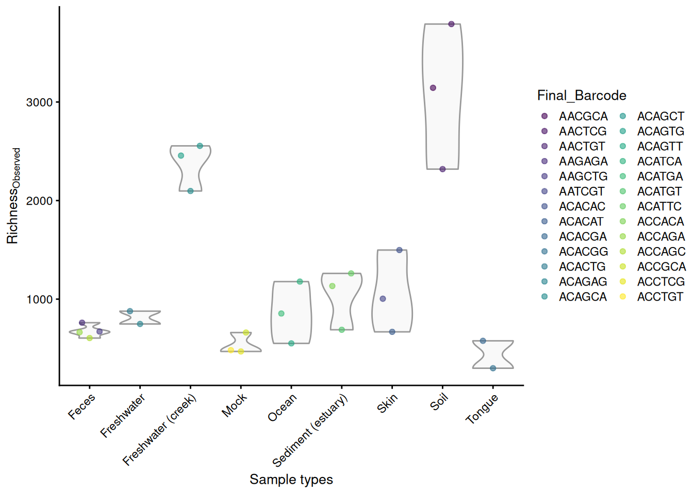
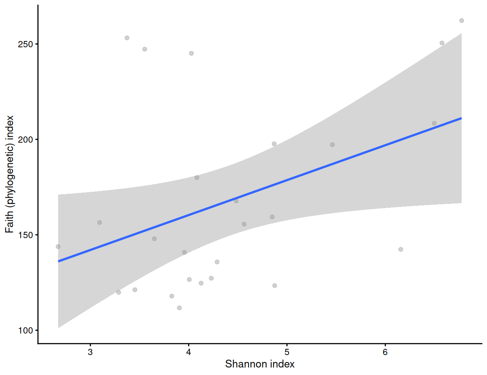
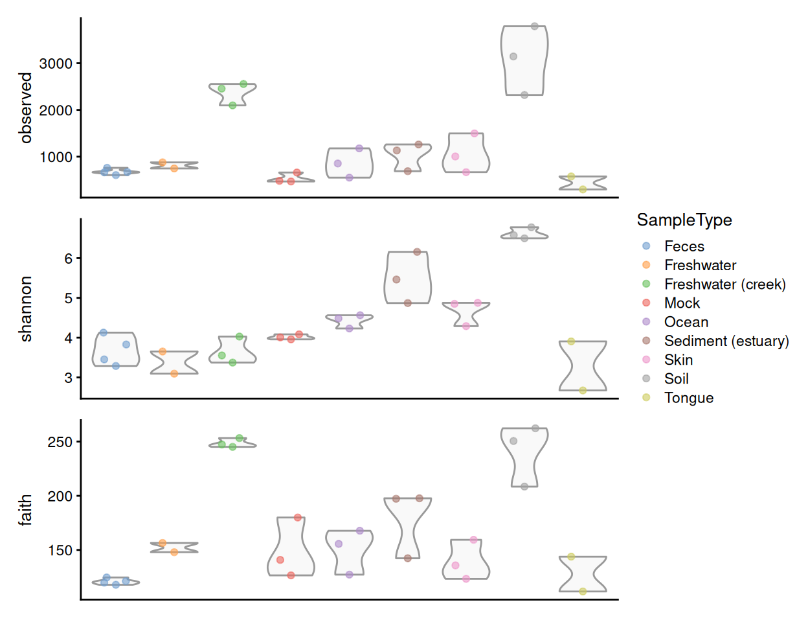
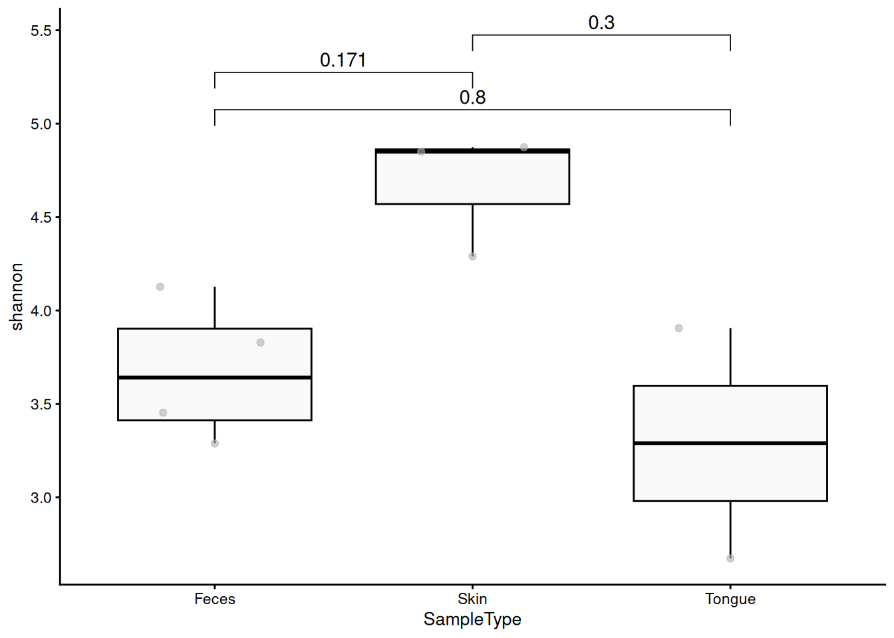

13 Alpha Diversity
13.1 Background
Alpha diversity, or within-sample diversity, is a central concept in microbiome research. In ecological literature, several distinct but related alpha diversity indices, often referring to richness and evenness - the number of taxa and how they are distributed, respectively - are commonly used (Willis 2019; Whittaker 1960). The term diversity can be used to collectively refer to all these indices.
13.1.1 Applications
Alpha diversity is predominantly used to quantify complexity in the microbiome. In the general adult population, lower alpha diversity and lower bacterial load have been associated to worse overall physical and mental health (Valles-Colomer et al. 2019; Vandeputte et al. 2017). However, this principle may not generalize to other populations, most notably in early life and in patient cohorts (Ma, Li, and Gotelli 2019).
13.1.2 Approaches
The majority of alpha diversity metrics are closely related, though this is not evident from their names. Bastiaanssen et al. (2023) lay out this relationship across two factors (See table below); First, alpha diversity metrics can be defined as special cases of a unifying equation of diversity, where the Hill number determines the specific index captured. Lower Hill numbers favour richness, the number of distinct taxa, whereas higher numbers favour evenness, how the taxa are distributed over the sample (Hill 1973). Second, some alpha diversity metrics are weighed based on phylogeny, like Faith’s PD (1992) and PhILR (Silverman et al. 2017).
Hill number 0
|
Hill number 1
|
Hill number 2
|
|
|---|---|---|---|
| Dependent on presence and absence of taxa, not abundance | Dependent on how evenly taxa are distributed in a sample | The probability of two randomly picked taxa not being the same | |
|
Neutral Diversity
Weighs each taxon equally, no assumptions about phylogeny |
Richness (Chao1) | Shannon Entropy | Simpson’s Index |
|
Phylogenetic Diversity
Indices are scaled based on taxonomic closeness with a phylogenetic tree |
Faith’s Phylogenetic Diversity | Phylogenetic Entropy | Rao’s Quadratic Diversity |
| The equation for general diversity can be defined as follows: \({{}^qD = (\sum_{i=1}^{R}p^q_i})^{\frac{1}{(1-q)}}\), with q = Hill number, R = number of features, p = relative feature abundance. |
|||
Several estimators have been developed to address the confounding effect of limited sampling size on observed richness, most notably ACE (A and SM 1992) and Chao1 (A 1984). Notably, these approaches may yield misleading results for modern 16S data, which commonly features denoising and removal of singletons (Deng, Umbach, and Neufeld 2024).
13.2 Examples
13.2.1 Calculate alpha diversity measures
Alpha diversity can be estimated with the addAlpha() function, which interacts with other packages implementing the calculation, such as vegan (Oksanen et al. 2020) and picante (Kembel et al. 2010; W et al. 2010). These functions calculate the given indices, and add them to the colData slot of the SummarizedExperiment object with the given name.
# First, let's load some example data.
library(mia)
data("GlobalPatterns", package="mia")
tse <- GlobalPatterns
# Compute one or multiple indices simultaneously through the index 'parameter'.
tse <- addAlpha(
tse, assay.type = "counts", index = c("observed", "shannon", "faith"),
detection = 10)
# Check some of the first values in colData
tse$observed |> head()
## [1] 3144 3791 2319 761 671 1004
tse$shannon |> head()
## [1] 6.577 6.777 6.498 3.828 3.288 4.289Certain indices have additional options, here observed has detection parameter that control the detection threshold. Species over this threshold is considered as detected. See full list of options from from help(addAlpha).
Because tse is a TreeSummarizedExperiment object, its phylogenetic tree is used by default. However, the optional argument tree must be provided if tse does not contain a rowTree.
13.2.2 Visualize alpha diversity measures
As alpha diversity metrics typically summarize high-dimensional samples into singular values, many visualization approaches are available. Once calculated, these metrics can be analyzed directly from the colData, for example, by plotting them using plotColData() from the scater package (McCarthy et al. 2020). Here, we use the observed species as a measure of richness. Let’s visualize the results against selected colData variables (sample type and final barcode).
library(scater)
plotColData(
tse,
"observed",
"SampleType",
colour_by = "Final_Barcode") +
theme(axis.text.x = element_text(angle = 45, hjust = 1)) +
labs(x = "Sample types", y = expression(Richness[Observed]))
13.2.2.1 Alpha diversity measure comparisons
We can compare alpha diversities for example by calculating correlation between them. Below, a visual comparison between shannon and faith indices is shown with a scatter plot.
tse <- addAlpha(tse, assay.type = "counts", index = "shannon")
plotColData(tse, x = "shannon", y = "faith") +
labs(x="Shannon index", y="Faith (phylogenetic) index") +
geom_smooth(method = "lm")
cor.test(tse[["shannon"]], tse[["faith"]])
##
## Pearson's product-moment correlation
##
## data: tse[["shannon"]] and tse[["faith"]]
## t = 2.2, df = 24, p-value = 0.04
## alternative hypothesis: true correlation is not equal to 0
## 95 percent confidence interval:
## 0.02719 0.68822
## sample estimates:
## cor
## 0.4102Let us visualize results from multiple alpha diversity measures against a given sample grouping available in colData (here, sample type). These have been readily stored in the colData slot, and they are thus directly available for plotting.
library(patchwork)
# Create the plots
plots <- lapply(
c("observed", "shannon", "faith"),
plotColData,
object = tse,
x = "SampleType",
colour_by = "SampleType")
# Fine-tune visual appearance
plots <- lapply(
plots, "+",
theme(axis.text.x = element_blank(),
axis.title.x = element_blank(),
axis.ticks.x = element_blank()))
# Plot the figures
wrap_plots(plots, ncol = 1) +
plot_layout(guides = "collect")
13.2.3 Statistical analysis of alpha diversity measures
We can then analyze the statistical significance. We use the non-parametric Wilcoxon or Mann-Whitney test, as it is more flexible than the commonly used Student’s t-Test, since it does not assume normality.
pairwise.wilcox.test(
tse[["observed"]], tse[["SampleType"]], p.adjust.method = "fdr")
##
## Pairwise comparisons using Wilcoxon rank sum exact test
##
## data: tse[["observed"]] and tse[["SampleType"]]
##
## Feces Freshwater Freshwater (creek) Mock Ocean
## Freshwater 0.4 - - - -
## Freshwater (creek) 0.3 0.3 - - -
## Mock 0.3 0.3 0.3 - -
## Ocean 0.8 1.0 0.3 0.3 -
## Sediment (estuary) 0.3 0.8 0.3 0.3 0.8
## Skin 0.3 0.8 0.3 0.3 0.8
## Soil 0.3 0.3 0.5 0.3 0.3
## Tongue 0.3 0.5 0.3 0.8 0.5
## Sediment (estuary) Skin Soil
## Freshwater - - -
## Freshwater (creek) - - -
## Mock - - -
## Ocean - - -
## Sediment (estuary) - - -
## Skin 1.0 - -
## Soil 0.3 0.3 -
## Tongue 0.3 0.3 0.3
##
## P value adjustment method: fdr13.2.3.1 Visualizing significance in group-wise comparisons
Next, let’s compare the Shannon index between sample groups and visualize the statistical significance. Using the stat_compare_means function from the ggpubr package, we can add visually appealing p-values to our plots.
To add adjusted p-values, we have to first calculate them.
library(ggpubr)
library(tidyverse)
index <- "shannon"
group_var <- "SampleType"
# Subsets the data. Takes only those samples that are from feces, skin, or
# tongue.
tse_sub <- tse[ , tse[[group_var]] %in% c("Feces", "Skin", "Tongue") ]
# Changes old levels with new levels
tse_sub$SampleType <- factor(tse_sub$SampleType)
# Calculate p values
pvals <- pairwise.wilcox.test(
tse_sub[[index]], tse_sub[[group_var]], p.adjust.method = "fdr")
# Put them to data.frame format
pvals <- pvals[["p.value"]] |>
as.data.frame()
varname <- "group1"
pvals[[varname]] <- rownames(pvals)
# To long format
pvals <- reshape(
pvals,
direction = "long",
varying = colnames(pvals)[ !colnames(pvals) %in% varname ],
times = colnames(pvals)[ !colnames(pvals) %in% varname ],
v.names = "p",
timevar = "group2",
idvar = "group1"
) |>
na.omit()
# Add y-axis position
pvals[["y.position"]] <- apply(pvals, 1, function(x){
temp1 <- tse[[index]][ tse[[group_var]] == x[["group1"]] ]
temp2 <- tse[[index]][ tse[[group_var]] == x[["group2"]] ]
temp <- max( c(temp1, temp2) )
return(temp)
})
pvals[["y.position"]] <- max(pvals[["y.position"]]) +
order(pvals[["y.position"]]) * 0.2
# Round values
pvals[["p"]] <- round(pvals[["p"]], 3)
# Create a boxplot
p <- plotColData(
tse_sub, x = group_var, y = index,
show_boxplot = TRUE, show_violin = FALSE) +
theme(text = element_text(size = 10)) +
stat_pvalue_manual(pvals)
p
13.3 Further reading
Article on ggpubr package provides further examples for estimating and highlighting significances.